Web 推送
创建应用
创建应用步骤:
创建应用 : 点击 创建应用 按钮即可;
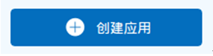
配置应用信息 : 输入应用名称, 上传一个图标, 然后填写一个包名, JPush 系统会在后台根据你输入的包名生成的推送的 Android 应用 Demo, 该 Demo 包含了该配置的信息;
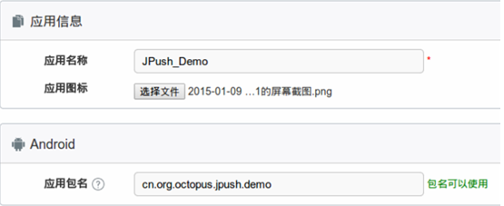
查看应用界面
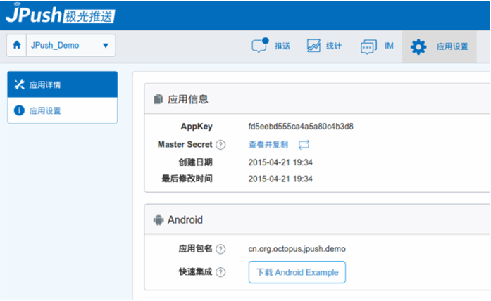
应用管理
点击回首页按钮，点击"应用管理"按钮，可以浏览该应用的详细信息，通过链接应用名称、图表、通知、编辑，可以进入更详细的页面进行浏览查看和编辑
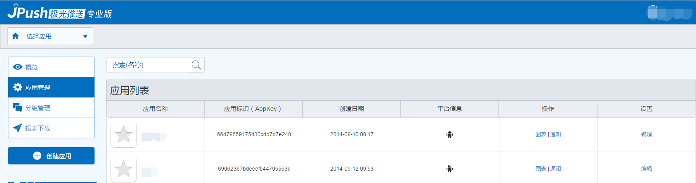
应用详情如下
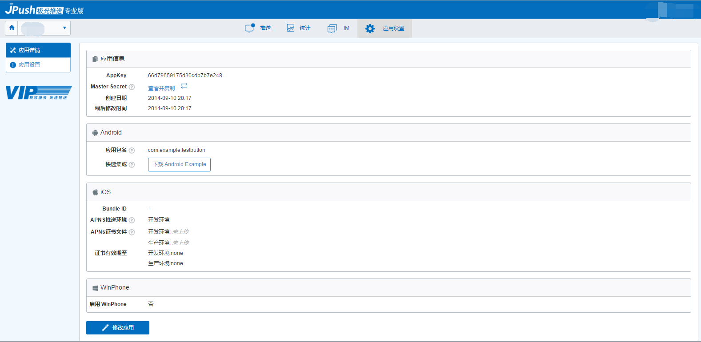
应用设置如下
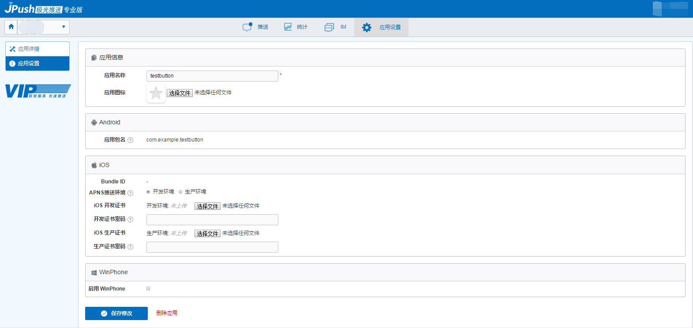
概览
点击回首页按钮①，点击②"概览"按钮，可以浏览汇总信息和应用列表信息
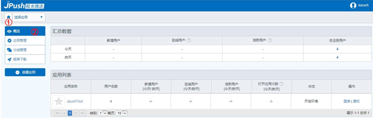
分组管理
点击回首页按钮，点击"分组管理"按钮，可以浏览应用的分组管理信息
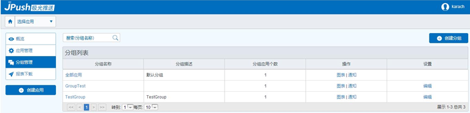
报表下载
点击回首页按钮，点击"报表下载"按钮，可以根据时间对报表进行下载
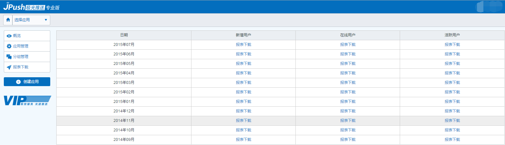
发送通知
在应用的 "推送" 模块, 点击"发送通知"按钮; 输入推送内容 , 点击页面最下方的 "立即发送" 按钮
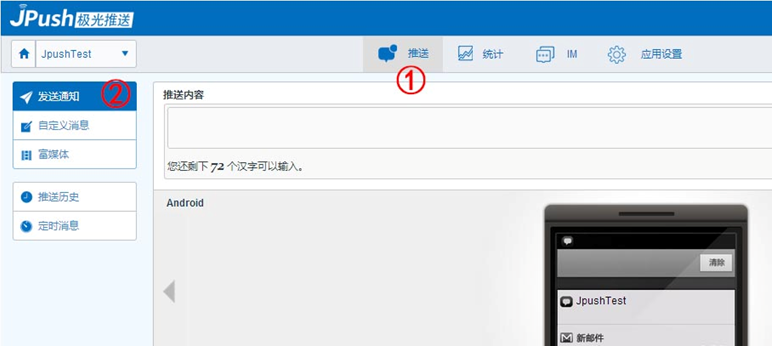
在Web 界面会弹出对话框, 提示是否发送, 选 "发送吧" 即可;
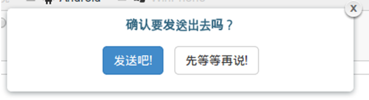
查看推送结果 : 点击之后又弹出对话框, 点击 "去看看" 可以查看推送结果;
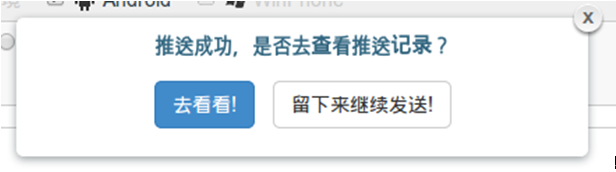
自定义消息
在应用的 "推送" 模块, 点击"自定义消息"按钮; 输入推送内容 , 点击页面最下方的 "立即发送" 按钮
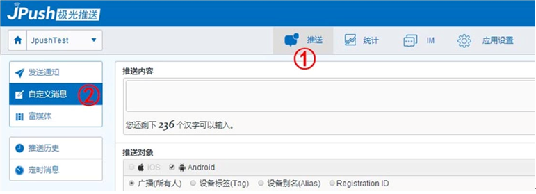
富媒体推送
可通过模板发送landing page、弹窗、信息流形式的富媒体通知，或者直接通过URL发送预先编辑好的页面。另外可以通过草稿箱，管理模板草稿。
通过landing page 模板发送
- Step1：在应用的“推送”模块，单击“富媒体”按钮；选择“landing page”，目前landing page只提供一种通用模板。
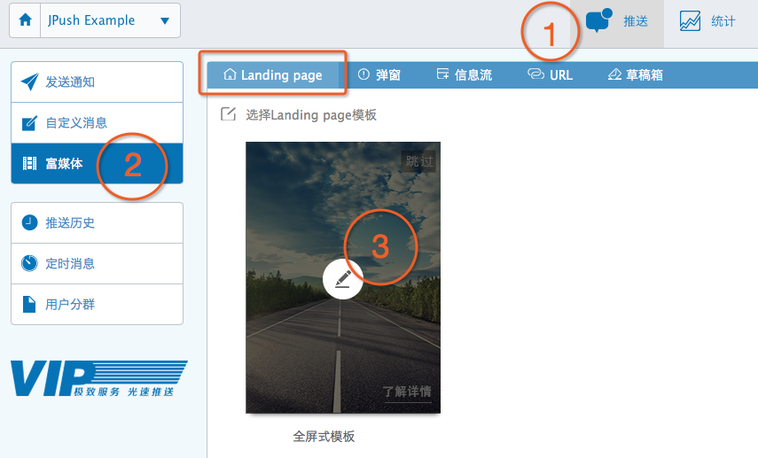
- Step2：进入模板内容编辑页面，填写所有内容，单击下一步；左侧可预览内容的展示效果；单击【保存草稿】，供以后编辑，从草稿箱中可以找到之前保存的草稿。
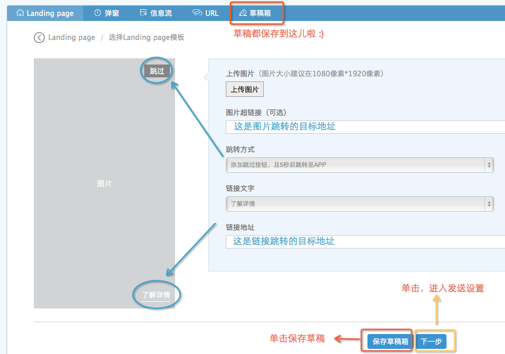
- Step3：进行推送设置。单击“预览富媒体页面”，可以预览刚刚编辑完成的landing page模板。单击页面最下方的 "立即发送" 按钮，即可完成该landing page的发送。
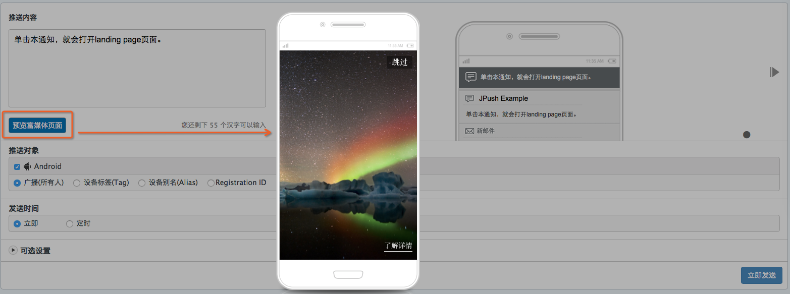
通过弹窗模板发送
- Step1：在应用的“推送”模块，单击“富媒体”按钮；选择“弹窗”，挑选适合的模板。
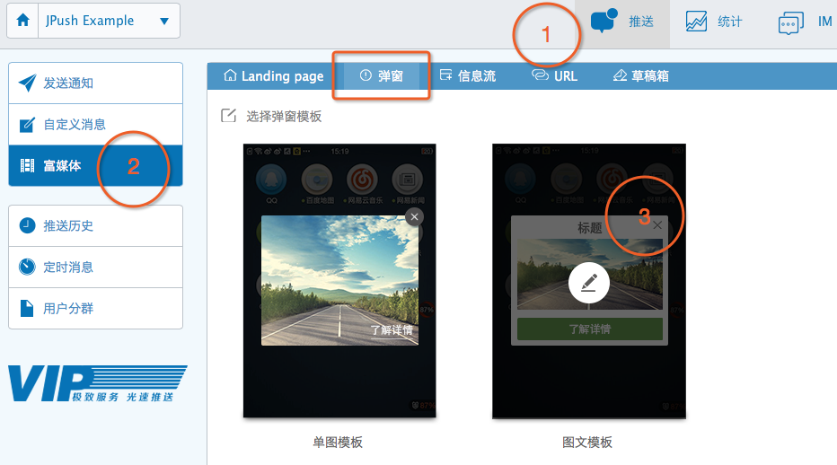
- Step2：进入模板内容编辑页面，填写所有内容，单击下一步；左侧可预览内容的展示效果；单击【保存草稿】，供以后编辑，从【草稿箱】中可以找到之前保存的草稿。
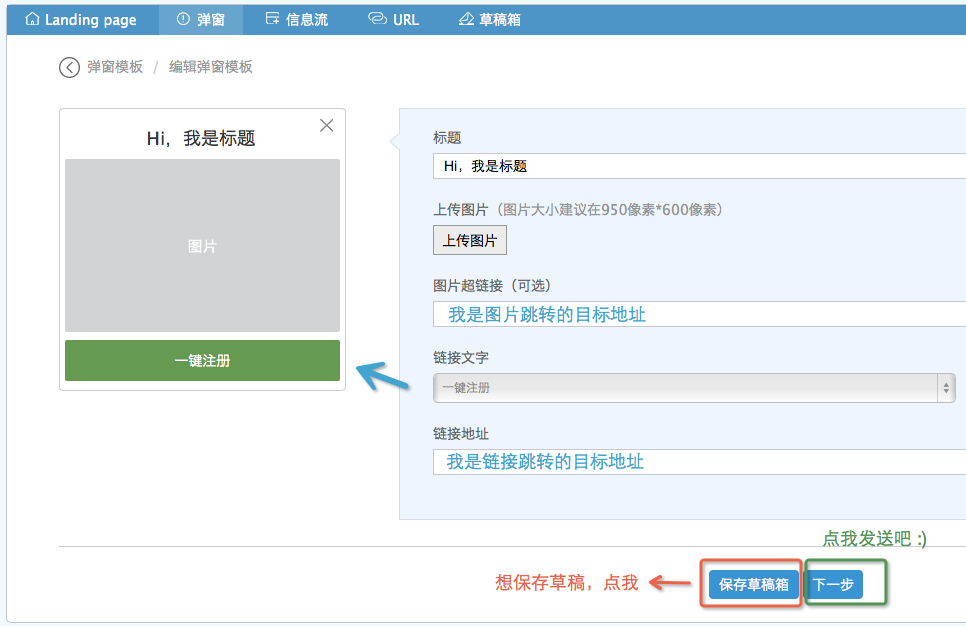
- Step3：进行推送设置。单击“预览富媒体页面”，可以预览刚刚编辑完成的弹窗模板。单击页面最下方的 "立即发送" 按钮，即可完成该弹窗的发送。
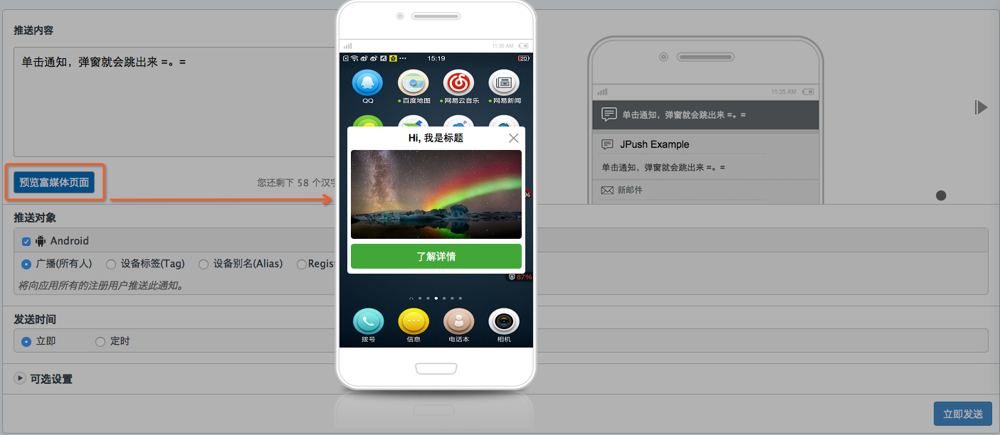
通过信息流模板发送
- Step1：在应用的“推送”模块，单击“富媒体”按钮；选择“信息流”，挑选适合的模板。
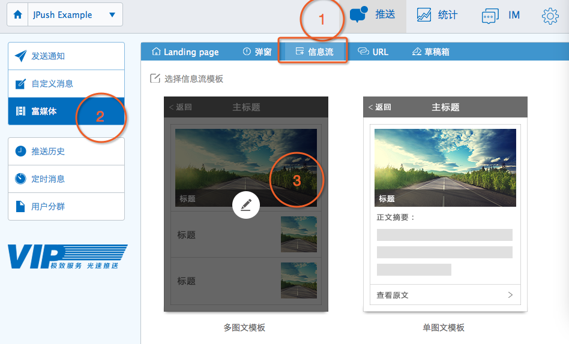
- Step2：进入模板内容编辑页面，填写所有内容，单击下一步；左侧可预览内容的展示效果。通过左侧的预览区域，可以切换编辑模块和添加子模块。单击【保存草稿】，供以后编辑，从【草稿箱】中可以找到之前保存的草稿。
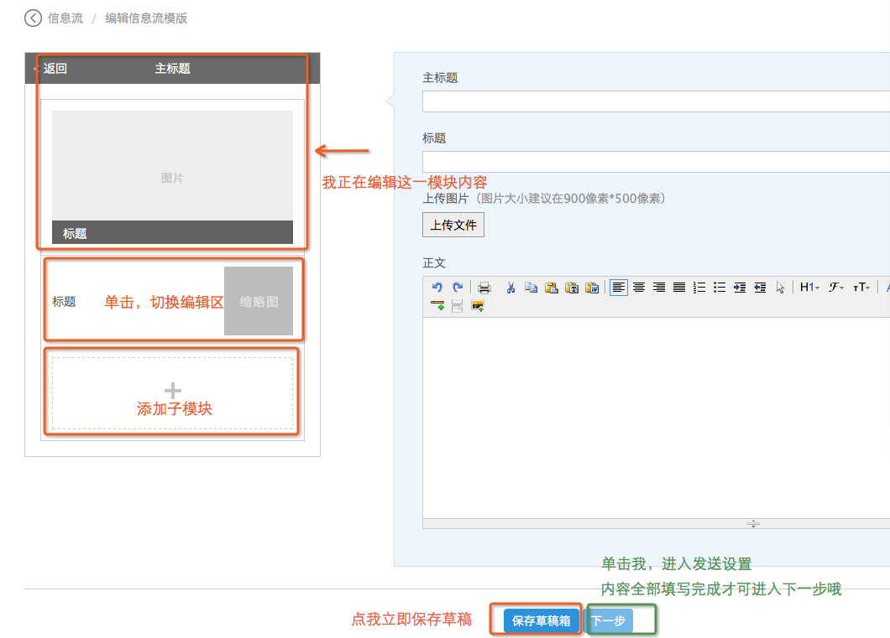
- Step3：进行推送设置。单击“预览富媒体页面”，可以预览刚刚编辑完成的信息流模板。单击页面最下方的 "立即发送" 按钮，即可完成该信息流的发送。
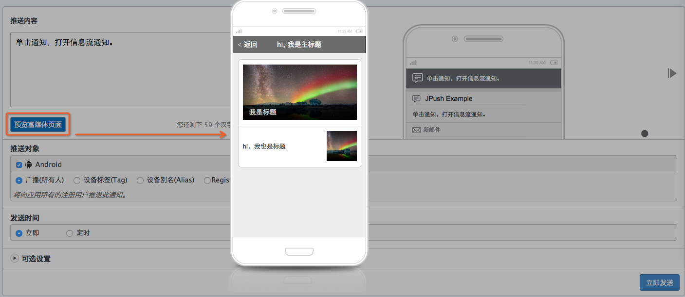
通过URL发送通知
- Step1：在应用的“推送”模块，单击“富媒体”按钮，选择“URL”。
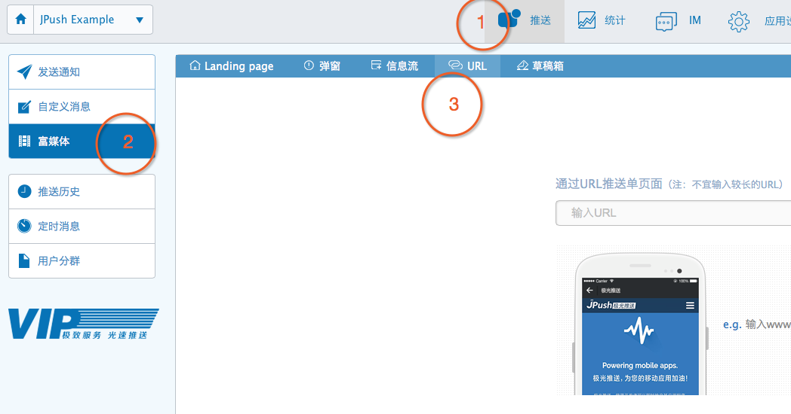
- Step2：输入想要推送的页面的URL，单击“下一步”按钮。由于通知的大小有限制，URL不可过长。若URL超过限制长度，请自行转成短地址再输入发送。
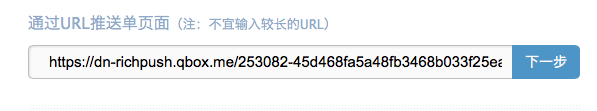
- Step3：进行推送设置。URL不提供页面预览功能，请确保输入正确的URL。单击页面最下方的 "立即发送" 按钮，即可完成发送。
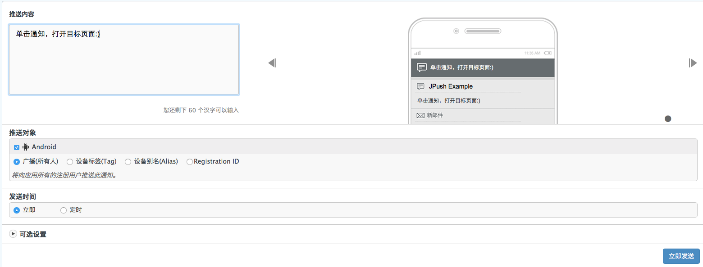
通过草稿箱管理模板草稿
在应用的“推送”模块，单击“富媒体”按钮，选择“草稿箱”。草稿按最后编辑的时间顺序排列，可选择任一草稿，进行编辑或删除的操作。
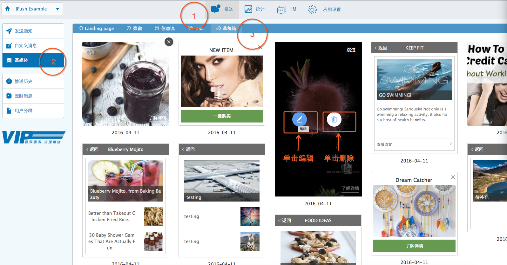
推送历史
在应用的 "推送" 模块, 点击"推送历史"按钮; 在右边可以浏览推送的历史数据，包含推送时间，内容，类型，IOS 目标|成功，Android目标|成功，Winphone目标|成功，操作。
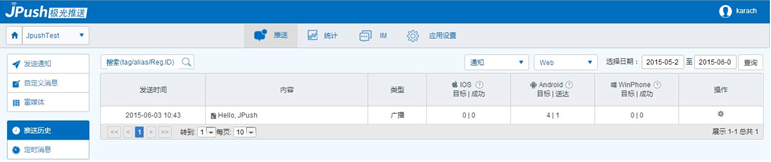
说明
- 类型包括：广播、tag、alias、Registration ID
- 操作包括：转发、统计、详情、删除
注意
推送历史数据只保留一个月的统计信息。
详情如下：
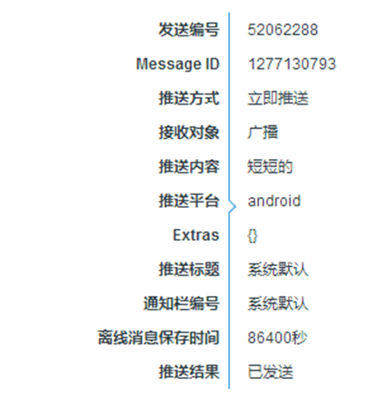
统计示例
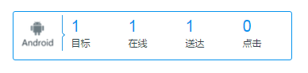
定时推送
在应用的 "推送" 模块, 点击"定时消息"按钮;在最右边的下拉菜单中可以选择“通知”还是“自定义消息”的定时推动
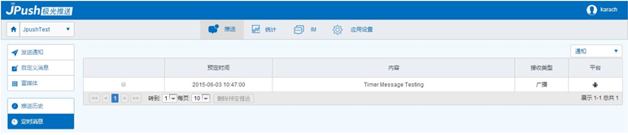
定速推送
定速推送时长(分钟),在应用的 "推送" 模块,点击定速推送
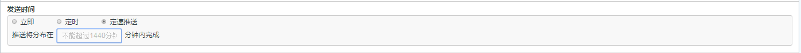
统计与报表说明
查看报表
JPush 的 Web 上提供了多种应用级别的统计数据。如下图所示，用户在登录JPush 帐号，并选择了具体的应用后，可以在顶部导航条内选择“统计”
选择报表类型
JPush 统计包括：推送统计，用户统计，API 统计，活跃分析，在线留存率
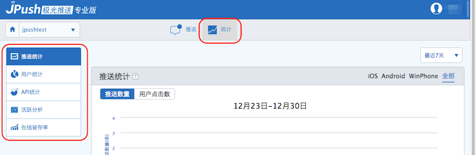
选择统计时间
可以在报表右上角选择统计的时间范围，也可以自定查询范围，具体统计周期如下图所示。单位粒度依次为：小时，天，月。
例：如果选择“昨天”，那么报表呈现的数据是以小时为单位；如果选择”最近7天“，那么报表呈现的数据则是是以天为单位。
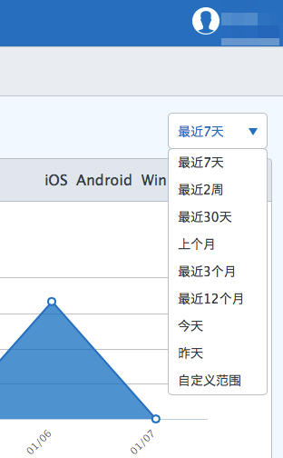
统计项说明
推送统计
推送报表呈现“推送数量”和“用户点击”情况,部分统计效果需要实现 推送效果反馈 API。
送达数量
Android 用户实际收到推送的数量合计，该数量包括：通过Portal发出的，以及通过API发出的。包括通知，也包括自定义消息。
iOS 与 Window Phone 系统由于原理不同，此曲线显示的为正确送达到 APNS 和 MPNS 的统计。
用户点击数
用户通过点击通知栏消息进入应用的次数。
对于 Android应用，需要实现了统计分析 API才有这个统计数据。
用户统计
新增用户
“新增用户”是指新增的 JPush 注册用户。当应用第一次启动时，JPush SDK 会向 JPush 发起内部注册。iOS 系统如果用户在首次使用时选择禁用推送，则不计入新增用户统计。
在线用户
“在线用户”是指统计周期 与 JPush Server 建立网络连接成功的用户总数。统计时间连接过一次，则计入该统计项目，同一用户多次连接不重复计算。
活跃用户
“活跃用户” 是指统计时间内至少打开一次应用的用户总数。活跃用户与在线用户的区别是，活跃必须是用户打开过应用而在线用户是用户侧有网络与 JPush 保持连接。
Android 系统，需要实现推送效果反馈 API才可以统计到活跃用户。
API 统计
API统计
统计时长内调用 Push API 的总次数。注：API 次数不同于消息数，一次广播推送与一次别名推送均为 1 次 API 调用。
活跃分析
推送数量
定义同上，这里主要用作对比曲线，用来衡量推送后的用户活跃效果
用户打开次数
所有用户打开应用的次数合计。该指标可用于观测，是否随着推送数量的增加，用户打开应用更多了。
Android 系统，需要实现了推送效果反馈 API才有此统计数据。
用户使用时长（分钟）
所有用户使用应用的时长合计。该指标可用于观测，是否随着推送内容的不同，用户使用应用的时间更长。
Android 系统，需要实现了推送效果反馈 API才有此统计数据。
在线留存率
某段时间内新增的，过了一段时间以后仍然还在与 JPush 服务器有连接的用户，称为留存用户。留存用户占当时新增用户的比例称为留存率。“在线留存率“”可以更真实的反映用户的用户留存情况。
注意：JPush 的留存用户定义是在线用户，即与服务器仍然有连接的用户（可以是不打开应用只后台在线）。此定义不同与其他根据用户活跃统计的“活跃留存率”，由于iOS 平台机制用户打开应用才可能在线所以此留存约等于“活跃留存”
例如：日留存。某一天新增的用户数为100，在 3 天后这 100 个用户中依然在线的用户数为 50，那么这天新增用户的 3 天留存率为 50%。